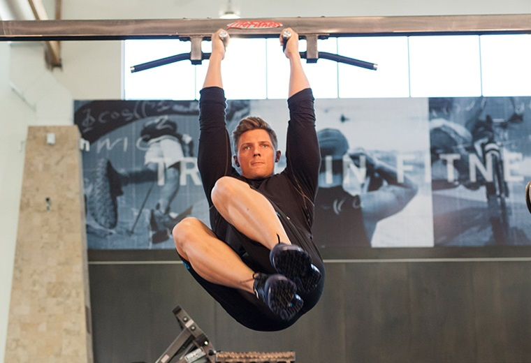
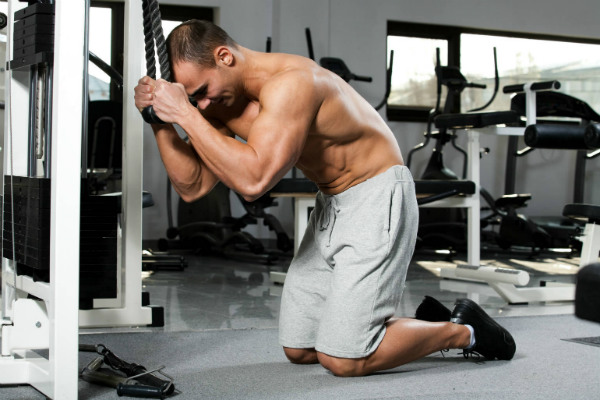
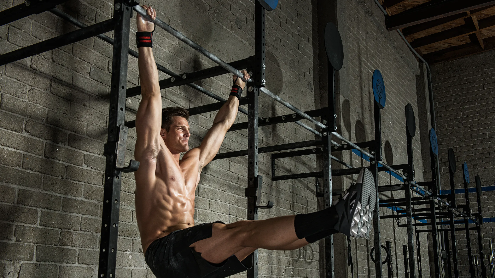

Los abdominales son un grupo de músculos ubicados en la parte frontal del abdomen y son responsables de varios movimientos, como la flexión de la columna vertebral y la estabilización del tronco. Es uno de los grupos musculares que más aporta a la estética, ya que tenerlos a la vista representan un buen porcentaje graso y salud, aunque en este sitio preferimos pesar por lo menos 10kg por encima de tu peso ideal antes que tener abdominales. Es muy importante entrenar este músculo debido a que los ejercicios que requieran estar de pie necesitan de fuerza en el abdomen para mantener la estabilidad, como por ejemplo el peso muerto y el curl con barra.
Pongo primero este ejercicio debido a que es el más completo de todos para el desarrollo del abdomen involucrando en gran medida los oblicuos. Es un ejercicio díficil debido a que requiere de un buen agarre debido a que debemos colgar de una barra. Si puedes hacerlo no dudes en agregarlo a tu rutina aunque sea 2 o 3 veces a la semana. Si solo quieres hacer un ejercicio de abdomen, haz este pero agregandole una elevación convencional en medio de cada repetición.
El mejor ejercicio sin duda alguna para el abdomen alto. El Crunch en Polea te permite agregar peso y esta es la razón de porque es de los mejores ejercicios para los abdominales en general, debido a que esto significa que permite hacer sobrecarga progresiva y no debes hacer 50 repeticiones en 10 variantes distintas de abdominales por 10 minutos para poder estimular y sobrecargar el músculo, ya que puedes simplemente agregarle el peso máximo que te permita realizar el rango de repeticiones deseado y asi poder romper las fibras y por lo tanto hipertrofiar el abdomen sin perder el tiempo.
Al igual que los demás ejercicios este es el mejor en su campo sin duda. Las Elevaciones de Pierna Colgado, de una barra por supuesto, es el mejor ejercicio para trabajar la parte inferior del abdomen que es la parte más dificil de revelar en el abdomen, con revelar me refiero a que es necesita un muy buen estado físicio y porcentaje de grasa óptimo para que el músculo sea visible. Este ejercicio no es para principiantes, al igual que el primer ejercicio de la lista debido a lo ya mencionado en este último.
